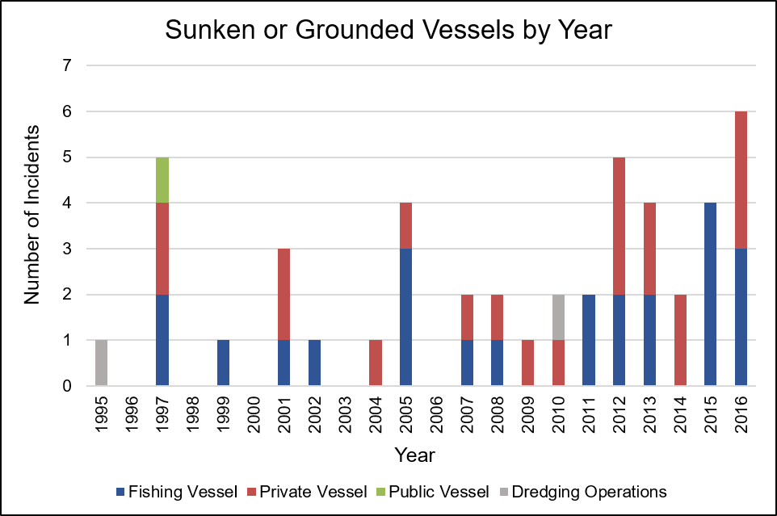
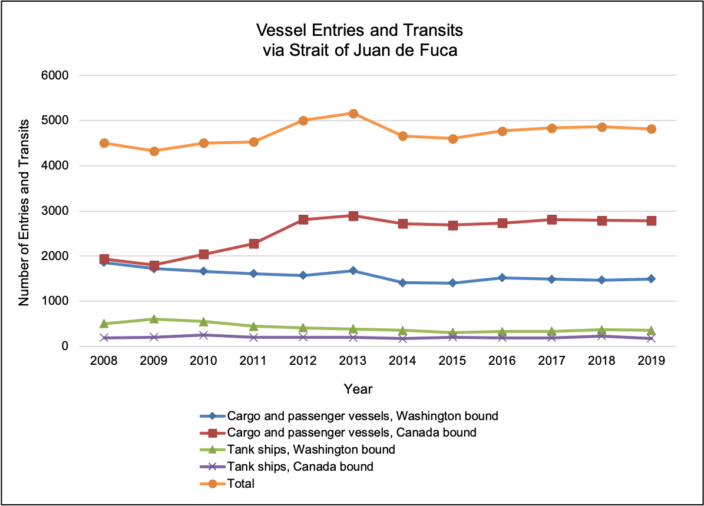

Map - Vessel density
 Map showing relative density of vessel traffic. Image: U.S. Department of the Navy, 2020.
Map showing relative density of vessel traffic. Image: U.S. Department of the Navy, 2020.
Map - Vessel zoning
 Map showing the northern portion of the sanctuary relative to the entrance to the Strait of Juan de Fuca, international shipping lanes and traffic separation schemes, and the Area to be Avoided designated by the IMO to reduce risks to the Olympic Coast from vessels over 400 gross tons. Image: T. Reyer/NOAA.
Map showing the northern portion of the sanctuary relative to the entrance to the Strait of Juan de Fuca, international shipping lanes and traffic separation schemes, and the Area to be Avoided designated by the IMO to reduce risks to the Olympic Coast from vessels over 400 gross tons. Image: T. Reyer/NOAA.
Trends - Cruise passengers
 Passenger embarkments, disembarkments, and in-transit stops at the Port of Seattle, 2000–2019. Image: Port of Seattle, 2019.
Passenger embarkments, disembarkments, and in-transit stops at the Port of Seattle, 2000–2019. Image: Port of Seattle, 2019.
Trends - Vessel groundings/sinkings
 Number of documented lost vessels in or near OCNMS by vessel type and by year. Image: Galasso, 2017.
Trends - Vessel transits
 Number of inbound vessel transits to the Strait of Juan de Fuca, including cargo and passenger vessels 300 gross tons and larger, and tank ships and tank barges (transporting oil) of any tonnage, from 2008–2019. Data collected from 2008–2019 demonstrate an overall 7% increase in vessel entries and transits, with a 13% increase in cargo and passenger vessel transits and a 24% decrease in tank ships. Source: Washington State Department of Ecology, 2020.